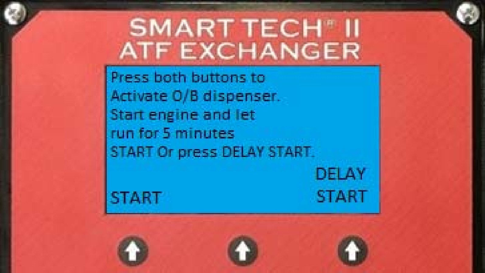

Doc no. MOC-TSB-17-04 // Vol. 17 No. 04 // Jun 26, 2017 // Transmission
Firmware Update for Smart Tech II ATF Machines
New
MOC has developed a new firmware revision for the Smart Tech® II ATF Machines. The new firmware allows the user to "Continue Service" when the sensor movement alert is triggered and the user sees that nothing is wrong with the sensor. The new firmware also has a Delayed Start feature which can be used when transmission cleaner is added to the transmission before the service. Choosing "Start Delay" will automatically start the flush service 5 minutes after pressing the button, allowing the cleaning chemical to cycle through the transmission before flushing.
What's new
Contact
For more information, contact the Machine & Equipment Department at 866.244.6621.
